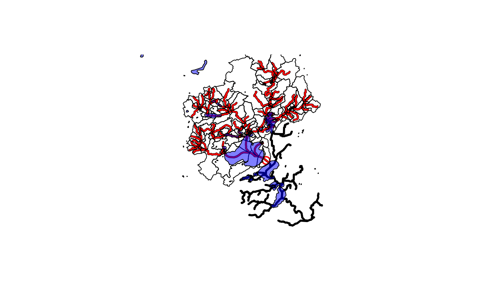

Saves a subset of the National Seamless database or other
nhdplusTools compatible data based on a specified collection of COMIDs.
This function uses get_nhdplus for the "download" data
source but returns data consistent with local data subsets in a subset
file.
subset_nhdplus(
comids = NULL,
output_file = NULL,
nhdplus_data = NULL,
bbox = NULL,
simplified = TRUE,
overwrite = FALSE,
return_data = TRUE,
status = TRUE,
flowline_only = NULL,
streamorder = NULL,
out_prj = 4269
)Arguments
- comids
integer vector of COMIDs to include.
- output_file
character path to save the output to defaults to the directory of the nhdplus_data.
- nhdplus_data
character path to the .gpkg or .gdb containing the national seamless database, a subset of NHDPlusHR, or "download" to use a web service to download NHDPlusV2.1 data. Not required if
nhdplus_pathhas been set or the default has been adopted. See details for more.- bbox
object of class "bbox" as returned by sf::st_bbox in Latitude/Longitude. If no CRS is present, will be assumed to be in WGS84 Latitude Longitude.
- simplified
boolean if TRUE (the default) the CatchmentSP layer will be included. Not relevant to the "download" option or NHDPlusHR data.
- overwrite
boolean should the output file be overwritten
- return_data
boolean if FALSE path to output file is returned silently otherwise data is returned in a list.
- status
boolean should the function print status messages
- flowline_only
boolean WARNING: experimental if TRUE only the flowline network and attributes will be returned
- streamorder
integer only streams of order greater than or equal will be downloaded. Not implemented for local data.
- out_prj
character override the default output CRS of NAD83 lat/lon (EPSG:4269)
Value
character path to the saved subset geopackage
Details
This function relies on the National Seamless Geodatabase or Geopackage. It can be downloaded here.
The "download" option of this function should be considered preliminary and subject to revision. It does not include as many layers and may not be available permanently.
Examples
# \donttest{
source(system.file("extdata/sample_data.R", package = "nhdplusTools"))
nhdplus_path(sample_data)
sample_flines <- sf::st_zm(sf::read_sf(nhdplus_path(), "NHDFlowline_Network"))
plot(sf::st_geometry(sample_flines),
lwd = 3)
start_point <- sf::st_sfc(sf::st_point(c(-89.362239, 43.090266)),
crs = 4326)
plot(start_point, cex = 1.5, lwd = 2, col = "red", add = TRUE)
start_comid <- discover_nhdplus_id(start_point)
comids <- get_UT(sample_flines, start_comid)
plot(sf::st_geometry(dplyr::filter(sample_flines, COMID %in% comids)),
add=TRUE, col = "red", lwd = 2)
output_file <- tempfile(fileext = ".gpkg")
subset_nhdplus(comids = comids,
output_file = output_file,
nhdplus_data = sample_data,
overwrite = TRUE,
status = TRUE)
#> All intersections performed in latitude/longitude.
#> Reading NHDFlowline_Network
#> 168 comids of 168
#> Writing NHDFlowline_Network
#> Reading CatchmentSP
#> 168 comids of 168
#> Writing CatchmentSP
#> Reading NHDArea
#> Writing NHDArea
#> Reading NHDWaterbody
#> Writing NHDWaterbody
#> Reading NHDFlowline_NonNetwork
#> Writing NHDFlowline_NonNetwork
#> Reading Gage
#> Writing Gage
#> Reading Sink
#> No features to write in Sink
#> $NHDFlowline_Network
#> Simple feature collection with 168 features and 136 fields
#> Geometry type: LINESTRING
#> Dimension: XY
#> Bounding box: xmin: -89.58537 ymin: 43.08521 xmax: -89.21254 ymax: 43.30179
#> Geodetic CRS: NAD83
#> # A tibble: 168 × 137
#> COMID FDATE RESOLUTION GNIS_ID GNIS_NAME LENGTHKM REACHCODE
#> * <int> <dttm> <chr> <chr> <chr> <dbl> <chr>
#> 1 13293750 1999-10-29 00:00:00 Medium 1577073 Yahara Ri… 1.72 07090002…
#> 2 13293504 1999-10-29 00:00:00 Medium 1577073 Yahara Ri… 1.41 07090002…
#> 3 13294134 1999-10-29 00:00:00 Medium 1577073 Yahara Ri… 0.74 07090002…
#> 4 13294128 1999-10-29 00:00:00 Medium 1577073 Yahara Ri… 3.70 07090002…
#> 5 13294394 1999-10-29 00:00:00 Medium 1577073 Yahara Ri… 0.077 07090002…
#> 6 13293454 1999-10-29 00:00:00 Medium 1577073 Yahara Ri… 0.94 07090002…
#> 7 13293430 1999-10-29 00:00:00 Medium 1577073 Yahara Ri… 1.14 07090002…
#> 8 13293424 1999-10-29 00:00:00 Medium 1577073 Yahara Ri… 1.27 07090002…
#> 9 13294110 1999-10-29 00:00:00 Medium 1577073 Yahara Ri… 7.48 07090002…
#> 10 13293398 1999-10-29 00:00:00 Medium 1577073 Yahara Ri… 0.082 07090002…
#> # ℹ 158 more rows
#> # ℹ 130 more variables: FLOWDIR <chr>, WBAREACOMI <int>, FTYPE <chr>,
#> # FCODE <int>, Shape_Length <dbl>, StreamLeve <int>, StreamOrde <int>,
#> # StreamCalc <int>, FromNode <dbl>, ToNode <dbl>, Hydroseq <dbl>,
#> # LevelPathI <dbl>, Pathlength <dbl>, TerminalPa <dbl>, ArbolateSu <dbl>,
#> # Divergence <int>, StartFlag <int>, TerminalFl <int>, DnLevel <int>,
#> # UpLevelPat <dbl>, UpHydroseq <dbl>, DnLevelPat <dbl>, DnMinorHyd <dbl>, …
#>
#> $CatchmentSP
#> Simple feature collection with 167 features and 6 fields
#> Geometry type: MULTIPOLYGON
#> Dimension: XY
#> Bounding box: xmin: -89.60479 ymin: 43.03507 xmax: -89.20378 ymax: 43.36607
#> Geodetic CRS: NAD83
#> # A tibble: 167 × 7
#> GRIDCODE FEATUREID SOURCEFC AreaSqKM Shape_Length Shape_Area
#> * <int> <int> <chr> <dbl> <dbl> <dbl>
#> 1 1085160 13293454 NHDFlowline 0.328 0.0256 0.0000364
#> 2 1085219 13293750 NHDFlowline 6.69 0.148 0.000740
#> 3 1085247 13294134 NHDFlowline 0.261 0.0307 0.0000288
#> 4 1085414 13293570 NHDFlowline 0.0514 0.00963 0.00000569
#> 5 1085447 13293430 NHDFlowline 1.63 0.0780 0.000181
#> 6 1085448 13293526 NHDFlowline 0.0690 0.0117 0.00000764
#> 7 1085463 13293588 NHDFlowline 0.429 0.0404 0.0000475
#> 8 1085478 13293614 NHDFlowline 3.15 0.0953 0.000348
#> 9 1085502 13294264 NHDFlowline 24.8 0.348 0.00275
#> 10 1085509 13293384 NHDFlowline 0.291 0.0296 0.0000323
#> # ℹ 157 more rows
#> # ℹ 1 more variable: geom <MULTIPOLYGON [°]>
#>
#> $NHDArea
#> [1] "NHDArea"
#>
#> $NHDWaterbody
#> [1] "NHDWaterbody"
#>
#> $NHDFlowline_NonNetwork
#> [1] "NHDFlowline_NonNetwork"
#>
#> $Gage
#> [1] "Gage"
#>
#> $Sink
#> NULL
#>
sf::st_layers(output_file)
#> Driver: GPKG
#> Available layers:
#> layer_name geometry_type features fields crs_name
#> 1 NHDFlowline_Network Line String 168 136 NAD83
#> 2 CatchmentSP Multi Polygon 167 6 NAD83
#> 3 NHDArea Polygon 1 14 NAD83
#> 4 NHDWaterbody Polygon 90 21 NAD83
#> 5 NHDFlowline_NonNetwork Line String 45 12 NAD83
#> 6 Gage Point 33 19 NAD83
catchment <- sf::read_sf(output_file, "CatchmentSP")
plot(sf::st_geometry(catchment), add = TRUE)
waterbody <- sf::read_sf(output_file, "NHDWaterbody")
plot(sf::st_geometry(waterbody),
col = rgb(0, 0, 1, alpha = 0.5), add = TRUE)

# Cleanup temp
unlink(output_file)
# Download Option:
subset_nhdplus(comids = comids,
output_file = output_file,
nhdplus_data = "download",
overwrite = TRUE,
status = TRUE, flowline_only = FALSE)
#> All intersections performed in latitude/longitude.
#> Reading NHDFlowline_Network
#> Spherical geometry (s2) switched off
#> Spherical geometry (s2) switched on
#> Writing NHDFlowline_Network
#> Reading CatchmentSP
#> Spherical geometry (s2) switched off
#> Spherical geometry (s2) switched on
#> Writing CatchmentSP
#> Spherical geometry (s2) switched off
#> although coordinates are longitude/latitude, st_intersects assumes that they
#> are planar
#> Spherical geometry (s2) switched on
#> Spherical geometry (s2) switched off
#> although coordinates are longitude/latitude, st_intersects assumes that they
#> are planar
#> Spherical geometry (s2) switched on
#> Spherical geometry (s2) switched off
#> although coordinates are longitude/latitude, st_intersects assumes that they
#> are planar
#> Spherical geometry (s2) switched on
#> $NHDFlowline_Network
#> Simple feature collection with 168 features and 137 fields
#> Geometry type: LINESTRING
#> Dimension: XY
#> Bounding box: xmin: -89.58537 ymin: 43.08522 xmax: -89.21254 ymax: 43.30179
#> Geodetic CRS: NAD83
#> # A tibble: 168 × 138
#> comid fdate resolution gnis_id gnis_name lengthkm reachcode
#> * <int> <dttm> <chr> <chr> <chr> <dbl> <chr>
#> 1 13293376 1999-10-28 23:00:00 Medium " " " " 3.04 07090002…
#> 2 13293378 1999-10-28 23:00:00 Medium " " " " 1.44 07090002…
#> 3 13293380 1999-10-28 23:00:00 Medium "157707… "Yahara … 4.84 07090002…
#> 4 13293382 1999-10-28 23:00:00 Medium " " " " 4.40 07090002…
#> 5 13293384 1999-10-28 23:00:00 Medium "157707… "Yahara … 0.839 07090002…
#> 6 13293386 1999-10-28 23:00:00 Medium " " " " 4.67 07090002…
#> 7 13293388 1999-10-28 23:00:00 Medium "157707… "Yahara … 0.402 07090002…
#> 8 13293390 1999-10-28 23:00:00 Medium " " " " 1.08 07090002…
#> 9 13293392 1999-10-28 23:00:00 Medium "157707… "Yahara … 1.12 07090002…
#> 10 13293394 1999-10-28 23:00:00 Medium " " " " 0.351 07090002…
#> # ℹ 158 more rows
#> # ℹ 131 more variables: flowdir <chr>, wbareacomi <int>, ftype <chr>,
#> # fcode <int>, shape_length <dbl>, streamleve <int>, streamorde <int>,
#> # streamcalc <int>, fromnode <dbl>, tonode <dbl>, hydroseq <dbl>,
#> # levelpathi <dbl>, pathlength <dbl>, terminalpa <dbl>, arbolatesu <dbl>,
#> # divergence <int>, startflag <int>, terminalfl <int>, dnlevel <int>,
#> # uplevelpat <dbl>, uphydroseq <dbl>, dnlevelpat <dbl>, dnminorhyd <dbl>, …
#>
#> $CatchmentSP
#> Simple feature collection with 167 features and 6 fields
#> Geometry type: MULTIPOLYGON
#> Dimension: XY
#> Bounding box: xmin: -89.60479 ymin: 43.03507 xmax: -89.20378 ymax: 43.36607
#> Geodetic CRS: NAD83
#> # A tibble: 167 × 7
#> gridcode featureid sourcefc areasqkm shape_length shape_area
#> * <int> <int> <chr> <dbl> <dbl> <dbl>
#> 1 1085512 13293376 NHDFlowline 47.8 0.465 0.00530
#> 2 1085714 13293378 NHDFlowline 3.30 0.0899 0.000366
#> 3 1085651 13293380 NHDFlowline 19.1 0.247 0.00212
#> 4 1085750 13293382 NHDFlowline 12.1 0.197 0.00135
#> 5 1085509 13293384 NHDFlowline 0.291 0.0296 0.0000323
#> 6 1085979 13293386 NHDFlowline 9.94 0.175 0.00110
#> 7 1085517 13293388 NHDFlowline 0.154 0.0187 0.0000171
#> 8 1085768 13293390 NHDFlowline 1.41 0.0612 0.000157
#> 9 1085605 13293392 NHDFlowline 0.461 0.0393 0.0000511
#> 10 1085893 13293394 NHDFlowline 0.0796 0.0124 0.00000882
#> # ℹ 157 more rows
#> # ℹ 1 more variable: geometry <MULTIPOLYGON [°]>
#>
#> $NHDArea
#> Simple feature collection with 1 feature and 14 fields
#> Geometry type: POLYGON
#> Dimension: XY
#> Bounding box: xmin: -89.40194 ymin: 43.15016 xmax: -89.36131 ymax: 43.18112
#> Geodetic CRS: NAD83
#> # A tibble: 1 × 15
#> comid fdate resolution gnis_id gnis_name areasqkm elevation
#> * <int> <dttm> <chr> <chr> <chr> <dbl> <int>
#> 1 14711352 1999-10-28 23:00:00 Medium " " " " 1.36 0
#> # ℹ 8 more variables: ftype <chr>, fcode <int>, shape_length <dbl>,
#> # shape_area <dbl>, onoffnet <int>, purpcode <chr>, purpdesc <chr>,
#> # geometry <POLYGON [°]>
#>
#> $NHDWaterbody
#> Simple feature collection with 90 features and 21 fields
#> Geometry type: POLYGON
#> Dimension: XY
#> Bounding box: xmin: -89.72879 ymin: 42.9897 xmax: -89.20939 ymax: 43.40395
#> Geodetic CRS: NAD83
#> # A tibble: 90 × 22
#> comid fdate resolution gnis_id gnis_name areasqkm elevation
#> * <int> <dttm> <chr> <chr> <chr> <dbl> <int>
#> 1 14711398 1999-10-28 23:00:00 Medium " " " " 1.72 0
#> 2 13631579 1999-10-28 23:00:00 Medium " " " " 0.015 0
#> 3 13631537 1999-10-28 23:00:00 Medium "157691… "Lake Wi… 29.0 236
#> 4 13631583 1999-10-28 23:00:00 Medium " " " " 0.018 0
#> 5 13631603 1999-10-28 23:00:00 Medium " " " " 0.016 0
#> 6 13631605 1999-10-28 23:00:00 Medium " " " " 0.014 0
#> 7 13284204 1999-10-28 23:00:00 Medium " " " " 0.062 0
#> 8 13284192 1999-10-28 23:00:00 Medium "157379… "Schoenb… 0.473 0
#> 9 13284200 1999-10-28 23:00:00 Medium " " " " 0.045 0
#> 10 13293128 1999-10-28 23:00:00 Medium " " " " 0.123 0
#> # ℹ 80 more rows
#> # ℹ 15 more variables: reachcode <chr>, ftype <chr>, fcode <int>,
#> # shape_length <dbl>, shape_area <dbl>, onoffnet <int>, purpcode <chr>,
#> # purpdesc <chr>, meandepth <dbl>, lakevolume <dbl>, maxdepth <dbl>,
#> # meandused <dbl>, meandcode <chr>, lakearea <dbl>, geometry <POLYGON [°]>
#>
#> $NHDFlowline_NonNetwork
#> Simple feature collection with 45 features and 12 fields
#> Geometry type: LINESTRING
#> Dimension: XY
#> Bounding box: xmin: -89.62331 ymin: 43.04214 xmax: -89.25271 ymax: 43.35874
#> Geodetic CRS: NAD83
#> # A tibble: 45 × 13
#> comid fdate resolution gnis_id gnis_name lengthkm reachcode
#> * <int> <dttm> <chr> <chr> <chr> <dbl> <chr>
#> 1 13633729 1999-10-28 19:00:00 Medium " " " " 1.90 070700050…
#> 2 13633731 1999-10-28 19:00:00 Medium " " " " 1.80 070700050…
#> 3 13632305 1999-10-28 19:00:00 Medium " " " " 1.39 070700050…
#> 4 13632385 1999-10-28 19:00:00 Medium " " " " 2.36 070700050…
#> 5 13632393 1999-10-28 19:00:00 Medium " " " " 1.56 070700050…
#> 6 13632417 1999-10-28 19:00:00 Medium " " " " 2.87 070700050…
#> 7 13632571 1999-10-28 19:00:00 Medium " " " " 2.42 070700050…
#> 8 13632255 1999-10-28 19:00:00 Medium " " " " 2.12 070700050…
#> 9 13632257 1999-10-28 19:00:00 Medium " " " " 2.19 070700050…
#> 10 13633089 1999-10-28 19:00:00 Medium " " " " 1.29 070700050…
#> # ℹ 35 more rows
#> # ℹ 6 more variables: flowdir <chr>, wbareacomi <int>, ftype <chr>,
#> # fcode <int>, shape_length <dbl>, geometry <LINESTRING [°]>
#>
sf::st_layers(output_file)
#> Driver: GPKG
#> Available layers:
#> layer_name geometry_type features fields crs_name
#> 1 NHDFlowline_Network Line String 168 137 NAD83
#> 2 CatchmentSP Multi Polygon 167 6 NAD83
#> 3 NHDArea Polygon 1 14 NAD83
#> 4 NHDWaterbody Polygon 90 21 NAD83
#> 5 NHDFlowline_NonNetwork Line String 45 12 NAD83
# NHDPlusHR
source(system.file("extdata/nhdplushr_data.R", package = "nhdplusTools"))
up_ids <- get_UT(hr_data$NHDFlowline, 15000500028335)
#> defaulting to comid rather than permanent_identifier
sub_gpkg <- file.path(work_dir, "sub.gpkg")
sub_nhdhr <- subset_nhdplus(up_ids, output_file = sub_gpkg,
nhdplus_data = hr_gpkg, overwrite = TRUE)
#> All intersections performed in latitude/longitude.
#> Reading NHDFlowline
#> 1000 comids of 1427
#> 1427 comids of 1427
#> Writing NHDFlowline
#> Reading NHDPlusCatchment
#> 1000 comids of 1427
#> 1427 comids of 1427
#> Found invalid geometry, attempting to fix.
#> Writing NHDPlusCatchment
#> Reading NHDArea
#> Writing NHDArea
#> Reading NHDWaterbody
#> Writing NHDWaterbody
#> Reading NHDPlusSink
#> No features to write in NHDPlusSink
sf::st_layers(sub_gpkg)
#> Driver: GPKG
#> Available layers:
#> layer_name geometry_type features fields crs_name
#> 1 NHDFlowline Line String 1427 57 NAD83
#> 2 NHDPlusCatchment Multi Polygon 1361 7 NAD83
#> 3 NHDArea Polygon 8 14 NAD83
#> 4 NHDWaterbody Polygon 740 15 NAD83
names(sub_nhdhr)
#> [1] "NHDFlowline" "NHDPlusCatchment" "NHDArea" "NHDWaterbody"
#> [5] "NHDPlusSink"
plot(sf::st_geometry(hr_data$NHDFlowline), lwd = 0.5)
plot(sf::st_geometry(sub_nhdhr$NHDFlowline), lwd = 0.6, col = "red", add = TRUE)
 unlink(output_file)
unlink(sub_gpkg)
# }
unlink(output_file)
unlink(sub_gpkg)
# }